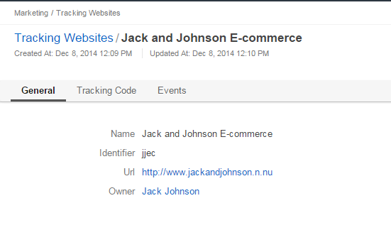
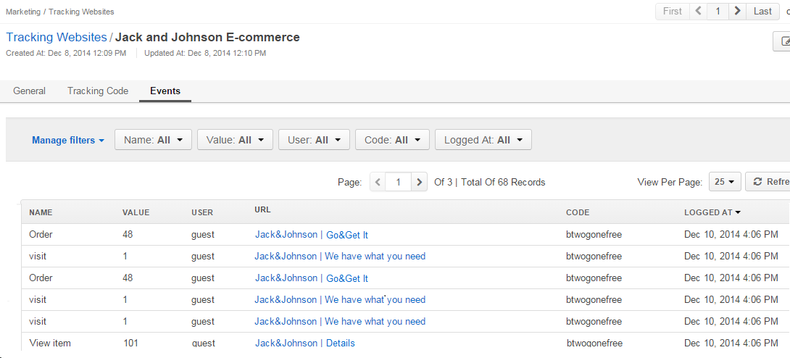
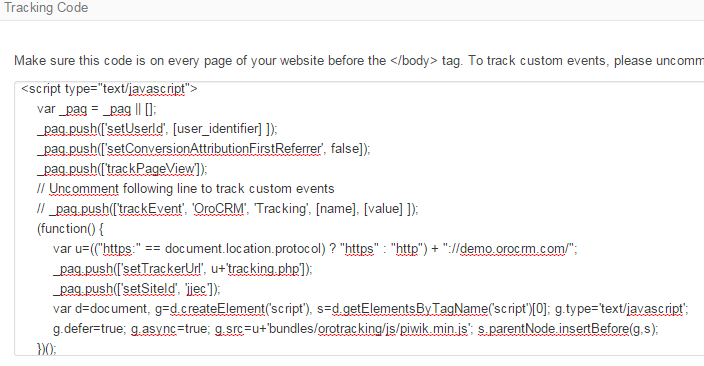

Tracking Websites¶
With tracking codes in Oro application, you can learn how many users have visited your website from links within a specific marketing campaign and what these users’ actions on the site were.
Before you start using tracking websites, ensure that tracking is enabled and configure tracking settings in Oro application via system configuration.
When the tracking configuration is ready, create a Tracking Website record and add the code generated to the web-pages that you want to monitor.
Create a Website Tracking and Generate a Tracking Code¶
To generate a new website tracking code:
Navigate to Marketing > Tracking Websites in the main menu.
Click Create Tracking Website in the top right corner to get to the Create Campaign page.
In the General section, provide the following information:
Field Description Name* Name used to refer to the record in the system Identifier* Unique code of the website used to generate its tracking Url* Url of the website to be tracked Owner* Limits the list of Users that can manage the tracking website record to the users, whose roles allow managing tracking-websites of the owner (e.g. the owner, members of the same business unit, system administrator, etc.). Description Optional. Channel Optional. Select one of the channels from the list. This connects the tracking record with a channel in the system. If this is done, you will be able to bind events registered by the tracking engine and other application data like orders, shopping carts, customer profiles, etc. This connection can be further utilized in reports and segments.

Once you finish configuring the tracking website, click Save and Close in the top right corner of the page.
Manage Tracking Websites¶
The following actions are available for a Tracking Websites record after you navigate to the Marketing > Tracking Websites in the main menu:
- Delete the record from the system :
- Get to the edit page of the record:
- Get to the view page of the record:
Note
The tracking process also depends on the Tracking settings defined for the Oro application instance.
View Tracking Website Details¶
To view the website tracking details:
- Navigate to Marketing > Tracking Website in the main menu.
- Click on the Tracking Website item to preview its contents.
Here you can:
Preview the general website tracking details (including the identifier and the URL).
Get the tracking code that may be incorporated into the website page to track the campaign-related user activities.

Note
The tracking code comes with the following instructions on basic use and customization:
Make sure this code is on every page of your website before the </body> tag. To track custom events, please uncomment the trackEvent string and replace [name], [value], and [user_identifier] parameters with your values. The script will log an event with the [name] name and optional [value].
Review the tracking results in Events section. A list of events help you monitor every occurrence of the tracked action (e.g. a user has accessed a pre-defined part of the Website following the campaign). You can find event name and value, user id (guest or user email), the url of the visited page, the code of the marketing campaign and time when the event was logged.
Note
In the example above you can see the three kinds of events defined for the Jack and Johnson E-commerce website tracking. As soon as a user gets on any of the website pages, a visit event is logged with the 1 value. As soon as a user gets to the Orders page of the website, an Order event is logged, with the value that stores an ordered item id. As soon as a user gets to the Item Details page of the website, an View item event is logged with a value that stores a viewed item id.
Using the Tracking Code¶
Tracking code generated in the Tracking Website shall be added before the </body> tag on every page of the website you would like to monitor.
The code defines some of piwik-specific settings that should not be changed.
The following variables may be amended:
1 | _paq.push(['setUserId', [user_identifier] ])
|
[user_identifier] defines the user id used in compliance with the website settings.
1 | _paq.push(['trackEvent', 'OroCRM', 'Tracking', [name], [value] ]
|
If you want to track user activities on a specific page of the Website, uncomment this line and replace the “[name]” and “[value]” with the event name (string) and value (number) you would like to see in the Events report in Oro application (e.g. for a cart, event name may be cart_created, and the value may store the item code or cost).
Note
The code may be filled with both static and dynamic values, however the use of dynamic values requires complex back-end development.
Tracked Website Example¶
This is the code pre-implemented for an average website:
1 2 3 4 5 6 7 8 9 10 11 12 13 14 | <script type="text/javascript">
var _paq = _paq || [];
_paq.push(['setUserId', "id=guest; visitor-id=51"]);
_paq.push(['setConversionAttributionFirstReferrer', false]);
_paq.push(['trackPageView']);
(function() {
var u="http://an.average.website.com/";
_paq.push(['setTrackerUrl', u+'tracking.php']);
_paq.push(['setSiteId', 'ANAWERAGEWEBSITE']);
var d=document, g=d.createElement('script'), s=d.getElementsByTagName('script')[0]; g.type='text/javascript';
g.defer=true; g.async=true; g.src=u+'bundles/orotracking/js/piwik.min.js'; s.parentNode.insertBefore(g,s);
})();
</script>
|
Every time a user gets to the page where this code is embedded, a visit event appears in the Website Tracking details with the corresponds value.
Visitors are treated as guests unless they sign in. As soon as the visitor signs in, their identification is logged in the visitor-id field. A special block has been implemented to enable transfer of the ID data to Oro application.
On some of the website pages, user activities may be logged in more details. For example, on the shopping list or shopping cart page, the following tracking script may be used:
1 2 3 4 5 6 7 8 9 10 11 12 13 14 | <script type="text/javascript">
var _paq = _paq || [];
_paq.push(['setUserId', "id=guest; visitor-id=51"]);
_paq.push(['setConversionAttributionFirstReferrer', false]);
_paq.push(['trackPageView']);
_paq.push(['trackEvent', 'OroCRM', 'Tracking', 'cart item added', '27' ]);
(function() {
var u="http://crm.dev/";
_paq.push(['setTrackerUrl', u+'tracking.php']);
_paq.push(['setSiteId', 'ANAWERAGEWEBSITE']);
var d=document, g=d.createElement('script'), s=d.getElementsByTagName('script')[0]; g.type='text/javascript';
g.defer=true; g.async=true; g.src=u+'bundles/orotracking/js/piwik.min.js'; s.parentNode.insertBefore(g,s);
})();
</script>
|
Every time a visitor gets to the website page where the code is embedded, a Cart item added event appears in the Website Tracking details.
A similar tracking script may be placed on any Website pages. For example, on the checkout page you may enable the following actions:
1 | _paq.push(['trackEvent', 'OroCRM', 'Tracking', 'order submitted', '2699.990000' ]);
|
An order submitted and the total cost of the order is logged.
Assign a Tracking Website in a Marketing Campaign¶
To include one or several Tracking Website(s) to a marketing campaign, use one of the following methods:
- Add a marketing campaign code to the tracking script provided in the Tracking Code section of the from the Website Tracking details (put it after the setUserId call). Each time a user reaches a page with such a code, an event will be logged within the campaign.
- Add marketing campaign code to the url and use this modified URL as a target in the links that lead to the website page. Use these modified URL in mailing, advert, landing pages etc. Each time a user reaches a page using the modified url, an event is logged within the campaign.
Related Topics on Marketing Automation